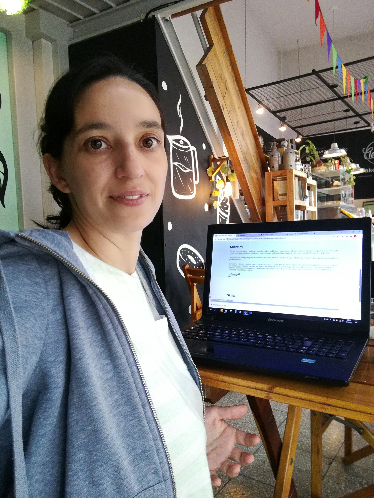

¡Hola! mi nombre es Stella Maris y me apasiona la creación de páginas web
Soy ingeniera industrial y actualmente estoy participando del proyecto Oracle ONE en Alura Latam
Sobre mi
Me llamo Stella Maris Ferreyra, tengo 41 años, nací en Buenos Aires y me gradué como ingeniera industrial. También realice varios cursos sobre habilidades blandas y programación web. Actualmente me encuentro estudiando front end en el proyecto de Oracle One.
Soy una persona curiosa y analítica, me gusta resolver problemas y mi principal motivación son los pequeños logros de cada día. Suelo pensar en grande para luego focalizarme en aquello que realmente importa y poder generar resultados funcionales y de valor.
Tengo un super poder para generar ambientes de trabajo amenos y colaborativos donde la comunicación y la empatía sean los valores preponderantes.
Ejercí como ingeniera industrial en importantes empresas y organismos estatales siempre aportando desde el diseño de los productos y/o procesos, sin embargo, creo que hay mucho por hacer utilizando la tecnología para mejorarlos. Por eso decicí desarrollarme en esta área. Con mi experiencia y estos conocimientos me siento capaz de generar cambios muy positivos en cuanto a optimización, usabilidad, accesibilidad y calidad.

Skills
-

Html 5
-

Css
-

JavaScript
-

Git
-

Node JS
Hobbies
-

Viajar
-

Robótica
-

Astronomía
-

Trekking
-

Natación
Formación académica
-

Ingeniería Industrial
-
Diplomatura en liderazgo
-

Programador Junior